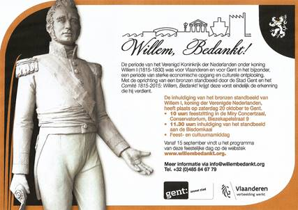
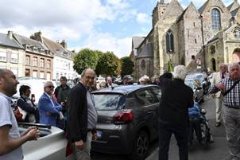
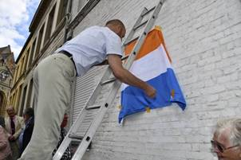
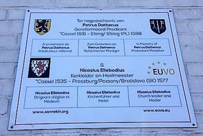
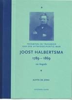
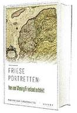
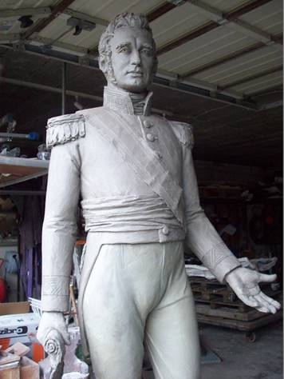
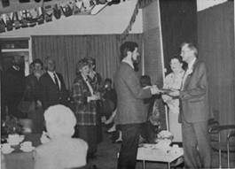

> nieuwsbrief
> 36e jg. - 4e trimester 2018

Hernieuwen ledenbijdrage voor 2018
De penningmeester dankt voor de
vlotte wijze waarop gehoor gegeven werd aan zijn verzoek tot
vereffening van de bijdrage voor 2018. De nalatigen tot nog
toe op wiens adresetiket het *-symbool ontbreekt -
vinden andermaal een betaalformulier in bijlage. Even ter
herinnering: de bijdrage voor het al in mei 2018 verschenen
nieuwe Jaarboek De
Nederlanden extra muros en voor de
driemaandelijkse Nieuwsbrief
Zannekin
beloopt 29 . Vanaf 35 wordt u met dank als steunend lid
geboekt. Men kan daartoe enkel nog gebruik maken van
ons Belgische zogenaamd Europees rekeningnummer iban BE13
4648 2202 5139 bic:
KREDBEBB
waarvan de rekeningoverzichten ons dagelijks meegedeeld
worden.
Hernieuwd verzoek
Onze Zannekin-Nieuwsbrief
verschijnt slechts driemaandelijks. Mochten onze leden en
belangtellenden ons massaal hun e-postadres willen meedelen,
dan wordt het ons mogelijk hen ook tussentijds te bereiken
teneinde hen vlotter te informeren omtrent de op stapel
staande activiteiten en andere initiatieven die in het
verlengde daarvan liggen. Wil ons daarom uw e-adres meedelen
via een kort berichtje aan maurits.cailliau@skynet.be
met als boodschap: interesse in Zannekin. Een honderdtal
leden deden dit al, waarvoor dank. Deze hernieuwde oproep is
dan ook gericht tot hen die dit tot nog toe nalieten te
doen.
Deze zal
doorgaan op zaterdag 13 oktober 2018 te Ravestein
bij Nijmegen. Verderop leest u terzake alle praktische
informatie en meteen ook welke belangrijke tijdsperiode uit
onze Nederlandse geschiedenis op deze dag in de kijker komt te
staan.
Ochtendprogramma
Vanaf
10.00 uur aankomst in het Raadhuis (adres
St.-Luciastraat 2,) te Ravenstein al waar rond 10.30 uur
ontvangst met koffie en gebak. Aansluitend welkomstwoord door
de voorzitter.
11.00
uur: een korte filmpresentatie over het
stadje en over de barokke Sint-Luciakerk die momenteel wegens
instortingsgevaar niet toegankelijk is. Aansluitend een
stadswandeling onder leiding van twee gidsen.
13.00
uur: Lunch (broodmaaltijd met beleg,
koffie en thee) in herberg De Keurvorst, tegenover het
Raadhuis.
Middagprogramma
Om
14.00 uur
begint het middagprogramma dat in het teken zal staan van
Filips van Kleef-Ravenstein. Hij werd geboren in Le Quesnoy
in de Franse Nederlanden - in 1459 en stierf te Wijnendale
bij Torhout - op 28 januari 1528. Hij was heer van Ravenstein,
Wijnendale en Edingen. Zijn familiebanden met het Huis van
Bourgondië droegen bij aan zijn bijzondere rol in de
geschiedenis van de Nederlanden op het einde van de 15e en in
de eerste decennia van de 16e eeuw. Zo werd hij in 1477 door
Maria van Bourgondië en haar echtgenoot Maximiliaan van
Habsburg aangesteld tot militair opperbevelhebber van
Frans-Vlaanderen en bestreed met wisselend succes de invallen
van het Franse leger. In 1482 herstelde hij de orde in het
prinsbisdom Luik na de moord op bisschop Lodewijk van Bourbon
door Willem van der Marck, bijgenaamd het Everzwijn der
Ardennen. Hij trouwde in 1485 met Francisca van Luxemburg,
dochter van Peter II van Saint-Pol en kasteelheer van Edingen;
hun huwelijk bleef kinderloos.
Filips
van Kleef trad in 1498 in dienst van zijn vroegere
tegenstander, de Franse koning Lodewijk XII en was enkele
jaren onderkoning in het Italiaanse Genua. Na zijn terugkeer
in Edingen richtte hij zich onder meer op de studie van de
oorlogvoering. Ook verzamelde hij kunstwerken voor zijn
kastelen van Edingen en Wijnendale. Zijn uitgebreide
boekenverzameling vormt de basis voor de huidige Koninklijke
Bibliotheek in Brussel.
Wim
van Heugten zal
in een korte algemene inleiding stilstaan bij het ontstaan van
de banden tussen Kleef en Bourgondië rond 1400 en de eerste
contacten met Ravenstein en Wijnendale, terwijl Jan van Tongeren
ingaat op het optreden van Filips van Kleef tijdens de
onderdrukking van de opstand tegen de Bourgondiërs in de
Vlaamse steden Ieper, Brugge en Gent. Prof. van Mourik zal
nader op Filips van Kleef ingaan - ook als persoonlijkheid -
en hem plaatsen in het kader van zijn hoedanigheid als heer
van Ravenstein, zijn rol als vesting-bouwer en de gevolgen die
dat heeft gehad tot ver in de Tachtigjarige Oorlog.
Rond
16.00 uur
wordt de (studie)dag afgesloten met een wandeling via het Philips
van Kleef Bolwerck naar de stellingmolen waar de
voorzitter in de stadsbrouwerij De Wilskracht en bij het genot
van een glas stadsbier de studiedag zal afsluiten.
Bereikbaarheid
Per
trein: halfuursdienst vanaf 's-Hertogenbosch
of vanaf Nijmegen. Na een wandeling vanaf 15 minuten bereikt
met het centrum van Ravenstein via de vestingwerken.
Per
auto: afrit Ravenstein kiezen op de A50
(Eindhoven-Zwolle) en de aanduidingen Centrum volgen. Gratis parkeerplaats
aan de Beneden Bleek. Navigatie:
Bleek 4, Ravenstein. Het Raadhuis bevindt zich op enkele
minuten wandelen van de Bleek.
Kostenplaatje:
Het geheel
aan kosten ontvangst, lunch, consumptie stadsbrouwerij,
gidsing werd begroot op 35 /per persoon (leden) of 40 /per
persoon (niet-leden) tot uiterlijk 6 oktober te vereffenen via
rekening IBAN: BE13 4648 2202 5139 BIC: KREDBEBB t.n.v.
Stichting ZANNEKIN, Paddevijvertraat 2, B.8900 Ieper. Uw
betaling geldt als aanmelding.
Petrus Datheen en Nicasius Elleboudius geëerd in hun geboorteplaats Kassel

De aanwezigen bij de De drie
Meulens, na de plechtigheid in de O.L. Vrouwkerk en voor de
onthulling van de gedenkplaat
La
Grande Place, de Grote Markt, in het Noord-Franse stadje
Cassel. Op een van de hoeken van het plein staat herberg Aux
Trois Moulins. Aan de linkerbuitenmuur hangt een gedenksteen,
ter ere van Datheen, de vergeten zoon van Cassel, een stad op
de berg.
Zaterdagmiddag.
Aan
de Rue Notre Dame beklimt iemand een stalen keukentrap,
verwijdert de zogenaamde Prinsenvlag die voor de gelegenheid
aan de zijgevel is bevestigd, en onthult daarmee een
gedenktegel in vier talen ter herinnering aan de
gereformeerde predikant Petrus Dathenus en aan zijn tijdgenoot
Nicasius Ellebodius. Ellebodius, kerkleider en heelmeester,
werd net als Datheen in Cassel geboren, en werd net als
Datheen door Cassel vergeten. In Cassel is niet één straat,
niet één naam en niet één steen aan hen gewijd. Het
stadsbestuur bleek ook op geen enkele wijze genegen om enige
medewerking te verlenen aan een herinneringsplaat voor hen.
Maar
aan die vergetelheid van beiden is vandaag een einde gekomen,
zegt Leo Camerlynck, zittend aan een tafeltje in de overvolle
stadsherberg. Camerlynck is voorzitter van de Stichting
Zannekin, die zich inzet om de historische en culturele banden
met gebieden die ooit tot de Nederlanden hebben behoord, weer
aan te halen. Camerlynck weet zeker dat Datheen in Cassel is
geboren, en wel in de schaduw van de Onze-Lieve-Vrouwekerk.
Buiten de herberg wijst hij naar een oorlogsmonument.
Daarachter staat een rijtje woningen. Daar moet hij gewoond
hebben, de dominee met de rode baard.
De
gedenkplaat is er gekomen in samenwerking met de vereniging
Euvo (Europa der volkeren), die zich beijvert om historisch
erfgoed in herinnering te houden. Het idee voor de gedenkplaat
is van de Groningse prof. mr. dr. Andries Postma, voormalig
Eerste Kamerlid voor het CDA.

De Prinsenvlag wordt van de
gedenkplaat verwijderd bij de onthulling
Wilhelmus
Voorafgaand
aan
de onthulling worden er voor een Nederlands, Belgisch en Frans
gezelschap in de achter de herberg gelegen
Onze-Lieve-Vrouwekerk enkele toespraken gehouden. De
Frans-Vlaming Wido Bourel voert het woord als stem van
Frans-Vlaanderen. Bourel noemt Datheen de grote voorvechter
van de Reformatie van de Nederlanden. Waarschijnlijk was hij
ook de dichter van het Wilhelmus. Dat wordt algemeen
aangenomen. Datheen moet talent hebben gehad als het gaat om
kennis van woord en muziek. Laten we er niet gering over
denken dat iemand die zijn hele leven voor zijn
geloofsovertuiging op de vlucht is geweest, in staat was om
een volledige psalmberijming te maken.
Tekst
en melodie
De
derde toespraak is een stem uit de Noordelijke Nederlanden.
Jan van t Hul, kerkredacteur bij het Reformatorisch Dagblad,
vertelt dat er in Nederland naar schatting in 29 kerkelijke
gemeenten nog steeds psalmen van Datheen worden gezongen.
Velen houden nog van Datheen. Dat kan niet zijn vanwege het
muzikale gehalte, want de combinatie van tekst en melodie is
soms buitengewoon onbeholpen. De tekstaccenten vallen vaak
niet samen met die van de melodie. Wat is het geheim dan wel?
Deze psalmen raken het hart en geven de geloofstaal van Gods
kinderen door. Het is erfgoed uit de tijd van de
geloofsvervolging waarin innige smeekbeden te vinden zijn om
bewaard te worden voor het geweld van de boze, om te mogen
schuilen bij God, de Almachtige.
Van t
Hul verwijst naar het recente proefschrift van zijn RD-collega
dr. Jaco van der Knijff. Van der Knijff had bij zijn promotie
opgeroepen tot het schrijven van een nieuwe biografie over
Datheen. De meest recente dateert uit 1919. Graag leg ik de
oproep om te komen tot een nieuwe biografie ook bij u neer.

De viertalige gedenkplaat na de
onthulling
De
laatste toespraak is een stem uit zuidelijk Afrika. De
Zuid-Afrikaanse Shilemeza Prins vertelt dat Datheen ook nog in
Zuid-Afrika wordt gezongen. Ze citeert Psalm 42 in het
Zuid-Afrikaans: Soos n hert in dorre streke, skreeuend dors
na die genot, van die helder waterbeke, skreeu my siel na U, o
God.
___________________
Fotos: Edward Stubbe
Bron: https://www.rd.nl/kerk-religie/petrus-datheen-geëerd-in-zijn-geboorteplaats-cassel-1.1508672
Prachtige biografie van Joost
Halbertsma
In
deze Mededelingen
komt Friesland maar heel af en toe aan bod. Toch wil ik uw
aandacht vragen voor een magnifieke en letterlijk grootse
biografie die verschenen is over de cultuurpaus van
Friesland, namelijk dominee Joost of Joost Halbertsma
(1789-1869).
Hij
is bekend geworden als schrijver, vooral als Friese schrijver.
Samen met twee van zijn broers heeft hij verhalen en gedichten
geschreven in het Fries. En dat was niet bepaald gewoon: er
was in het begin van de 19e eeuw immers nauwelijks iemand die
Friese verhalen en gedichten schreef. Het Fries was ooit
gebruikt voor het opstellen van wetten en rechten, en
uitzonderlijk als taal voor een bruiloftsvers of een
almanaktekstje. Het had echter geen status als literaire taal.
Halbertsma en zijn broers schreven niet alleen luchtige
liedjes en verhalen in het Fries, maar ook weemoedige
gedichten en kindergebedjes. Joost Halbertsma wordt daarom
beschouwd als één van de grondleggers van de Friese
literatuur. Zijn werk is een commentaar op de wereld, zijn
Friesland, de mens en niet minder op zichzelf. Hij volgde de
ontwikkelingen van zijn tijd op de voet. Daarnaast verzamelde
hij voorwerpen allerhande die verband hielden met de
geschiedenis, de folklore, de landbouw
van Friesland. Op
oudere leeftijd maakte hij alles over aan het Fries
provinciebestuur. Zijn verzameling lag aan de basis van het
latere Fries Museum. Hij was lid van Nederlandse en
buitenlandse geleerde genootschappen en correspondeerde met
geleerden als Jacob Grimm. Halbertsma reisde naar Duitsland,
Italië en Groot-Brittannië en publiceerde talloze pamfletten,
tekstedities, verhalenbundels en wetenschappelijke
verhandelingen. Kortom hij was Fries en wereldburger tegelijk.
Over
Joost Halbertsma publiceerde Alpita de Jong een lijvige
biografie van 655 blz. Het boek meet 26,5 bij 19,5 cm, weegt
ruim 2 kg en is gracieus uitgegeven. Alle illustraties staan
in vierkleurendruk afgedrukt. Het is een schitterende
biografie geworden en de tekst laat zich vlot lezen. Naast de
auteur verdient ook de uitgever een pluim.
Pieter Jan Verstraete
___________________
N.a.v. Alpita de Jong, Triomfen en tragedies van
een uitmiddelpuntig man: Joost Halbertsma, 1789-1869: een
biografie. Grou, uitgeverij Louise, 2018. Ill., 655 blz. Geb.,
55 euro - ISBN 978 94 9153 650 2.
Tussen
1988 en 2008 bezocht Pieter Jan Verstraete samen met zijn
echtgenote jaarlijks een regio in Friesland of een van de
Waddeneilanden. Steevast werd ook een bezoek gebracht aan het
Fries Letterkundig Museum (thans Tresoar) in Leeuwarden. Daar
werd het nodige materiaal verzameld over menig Friese
taalstrijder.
Het
resultaat van dit onderzoek groeide uit tot een reeks Friese Portretten
die gedurende twintig jaar in het Vlaams-Nederlandse jaarboek
Zannekin verscheen. Met zijn opstellenreeks was de auteur de
eerste naoorlogse Vlaming die jarenlang over Friesland
publiceerde.
Het
boek bundelt portretten van bekende en minder bekende Friezen
(ook van enkele Friese collaborateurs). Enkele namen: Obe
Postma, Gijsbert Japicx, de gebroeders Halbertsma, Harmen
Sytstra, Waling Dijkstra, Halvard Hettema en Rintsje Piter
Sybesma. Voor deze boekuitgave werden alle bijdragen herwerkt
en geactualiseerd.
Aan
de hand van het boek Friese
Portretten: een Vlaming ontdekt Friesland maakt u kennis
met een aantal figuren uit de rijke portrettengalerij van de
Friese Beweging. Het boek telt 275 blz. en is geïllustreerd.
______________
Deze publicatie is te bekomen door
storting van 18,50 euro (3,50 euro verzendingskosten
inbegrepen) op IBAN BE64 4627 2867 9152 van Pieter Jan
Verstraete, 8500 Kortrijk met vermelding 'Friezenboek'. Na
ontvangst van uw storting krijgt u het gewenste boek
thuisbezorgd.
Onder
deze naam zijn in deze cultuurhistorische reeks nu 19 delen
verschenen: 01: Boulogne
en de Boulonnais, 2003 02: De Atlantikwall in
Frans-Vlaanderen, 2004 03: De V1 - vliegende bom in
Frans-Vlaanderen, 2004 04: De V2-raket in
Noord-Frankrijk, Wizernes en Eperlecques, 2005, - 05: De Franse Westhoek -
Schatkamer van Vlaamse kunst en cultuur, 2006 06: Cassel, 2006 07: Het rijke Sint-Omaars,
2007 08: De geniale
Vauban en de Pré-Carré-vestingen 1677-1713, 2007 09: De Avesnois, 2008
10: Menen - De beroemde
Vaubanvesting, 2008 11: Gravelines/Grevelingen,
2010 12: Thiérache -
Aan de grens van de Nederlanden, 2011 13: De Grote Oorlog 1914
1918, 2012 - 14: Cambrai/Kamerijk,
2013 - 15. Watten,
Eperlecques, 2014 - 16. Orde van Malta, 2015
17: De Vallei van Aa,
2016 18: De Baai van
de Somme, 2017 19: Hitler aan het front
Fromelles, 2018. Voor 2019 wordt deel 20. Opaalkust verwacht.
Meer informatie is te verkrijgen via:
http://www.archeologiezwvl.be/index-3.html
of Philippe Despriet, Filips van de Elzaslaan 4, 8500
Kortrijk, T: 056 22 21 99,
E: philippe.despriet@belgacom.net.
Rudi Koot
Standbeeld Willem I wordt op 20 oktober ingehuldigd te Gent

Het ontwerp,
ondertussen in brons gegoten, wordt
eerstdaags officieel ingehuldigd.
U leest het
programma van het gebeuren bovenaan van deze
Nieuwsbrief
Van
29 juli tot en met 7 augustus 2018 reisde de Stichting
Zannekin
op zoek naar sporen uit de Nederlanden in
Midden-Europa
Mooie reisimpressie van medereiziger en
Zannekin-lid Freddie Boeykens op weg naar Oostland
Een
Zannekin-busreis verveelt nooit. Onze Drang nach Osten en
Henri, de prima buschauffeur en directeur van Belltours,
brachten ons naar Berlijn en verder. Ons dat was een
allegaartje van Vlamingen, Walen, Brusselaars en telkens één:
Nederlander (medegids Jan), een Italiaanse, een Armeense
en een Colombiaanse, alles met voldoende passieve of actieve
kennis van het Nederlands. Onze gidsen (Jan, Leo, Herman en
Henri) zorgden waar nodig voor een samenvattende uitleg in het
Frans over de bezienswaardigheden. Een tsunami volgde:
geschiedenis, cultuur, gastronomie, allerlei weetjes, alles
kwam aan bod, afgewisseld met mopjes. De stemming werd er één
van verbondenheid, een groepsgevoel. De hele tijd konden we
genieten van de hoogzomer. In die hitte hebben we vele
kilometertjes afgewandeld.
Voormalige
DDR
Het
overschrijden van de vroegere inter-Duitse grens was nog kil
voelbaar in Marienborn. Ook de vroegere Berlijnse deling was
nog zichtbaar aan Checkpoint Charlie en bij het Ostbahnhof.
Stilte bij het Holocaustmonument, blijheid op het
Spreeboottochtje.
Het
Versailles van Duitsland in Potsdam heet Sans
Souci, het gevoel dat de ganse 11-daagse overheerste.
Nabij werden we aangenaam verrast met de Hollandse wijk en een
Russisch buurtje met prachtige houten huizen. De Fläming en
het Sorbenland herinnerden respectievelijk aan de middeleeuwse
Vlaamse kolonisatie en de beschermde autochtone Slavische
bevolking (tweetalige straatnaamborden).
Polen,
Moravië, Tsjechië
In
Polen wachtten ons de kaboutertjes van Wrocław (Breslau) en de
Vlaamse wandtapijten in Kraków (Krakau), beide schitterende
steden. De gruwel van Auschwitz was pakkend. De avond ervoor
had dr. Herman Vandormael, auteur van verscheidene
geschiedenisboeken, ons een info van een half uurtje
beloofd: 2 uur lang onderhield hij ons over deze pikzwarte
periode van de Jodenvervolging. Referaat en bezoek grepen ons
bij de keel. Donkere gedachten waren er ook in de Joodse wijk
te Kraków, denkend aan Schindlers List.
Graag
had ik meer contact gehad met de inwoners van het Vlaamse
Wilamowice, maar Tsjechië stond al vol ongeduld te trappelen.
En terecht: Olomouc (Ollmütz), Brno (Brünn) en Praag zijn
pareltjes. Zeker deze laatste had vele diamantjes en verdient
ten volle de naam van Goldene Stadt Praag gaf hoop op een
betere wereld zoals de Vlaamse Lutgardis op de Karelsburg over
de Moldau (Vltava) en het Kindeke Jezus van Praag ons
toewensten. Austerlitz mogen aanschouwen maakte de
Driekeizersslag visueel. En ook Plen (Pilsen), de bierstad,
loonde de moeite.
Nürnberg
Nürnberg:
opnieuw kippenvel bij de rechtbank van de naoorlogse
naziprocessen en het bezoekerscentrum van hun
Reichsparteitagsgelände. Herademing in de schitterend
herstelde en ommuurde binnenstad. De stad van Albrecht Dürer,
die een tijdje in Antwerpen verbleef.
Bedankt
allemaal, gezelschap, gidsen en chauffeur. Henri was ook onze
redder in nood: zonder zijn drankencentrale hadden we deze
prachtreis van Zannekin en Belltours moeilijk overleefd.
Marten
Heida
Een
slotakkoord in een zwanenzangtoonzetting
Wanneer je je zet tot het
"componeren" van een slotakkoord dan kan het niet anders dat
daarin ook een stuk verleden "verklankt" wordt. Dat wordt
duidelijk uit de beelden die voorbij komen in de
achteruitkijkspiegel. Terwijl ik deze woorden neerschrijf
bedenk ik dat ik in mijn twintigste levensjaar er nooit van
heb kunnen dromen dat ik ze in mijn negentigste aan het papier
zou toevertrouwen. Immers ik had toen geen dromen meer; die
waren uiteengespat om de harde werkelijkheid van het leven. Ik
had boer willen worden; in opvolging van mijn vader had ik het
bedrijf willen overnemen. Maar mijn lichamelijke gesteldheid
liet het niet toe dat dit zou kunnen gebeuren. Gelukkig had ik
nog een droom; daarin speelde het boek een grote rol. Ik kwam
terecht in een boekhandel als leerjongen. Aanvankelijk werkte
ik in de zaak; later werd de straathandel mij toebedeeld. (met
een deftig woord werd deze activiteit "colportage" genoemd).
Echter als gevolg van de devaluatie van de gulden in 1948 was
hiermee geen droog brood te verdienen. En zo kreeg mijn
toekomst het karakter van dichtgeplakt te zijn.
Wat is het dan een zegen iemand te
mogen ontmoeten die zich voor je wil inzetten. Het is door
zijn toedoen geweest dat in september 1949 de deur van de
Christelijke kweekschool in Sneek voor mij openging. Vier jaar
lang was ik weer leerling om in de zomer van 1953 als meester
met de lagere akte deze school te verlaten. Via Opende (een
dorp in het Groningse westerkwartier) en Nieuwlande (het dorp
van de bekende verzetsstrijder Johannes Post en gelegen
halverwege Hoogeveen en Coevorden in de provincie Drenthe)
kwam ik in april 1961 met mijn gezin terecht in Zaamslag, een
dorp in het Zeeuwse deel van Vlaanderen.
Daar is de bal gaan rollen. Ik
ontdekte daar dat er ook nog een deel van Vlaanderen in
Frankrijk lag en dat er een groep mensen was die zich inzette
voor dat sterk verwaarloosde deel van het Nederlands
taalgebied. Deze belangstelling heeft ertoe geleid dat ik me
heb laten betrekken bij de activiteiten van het Komitee voor
Frans-Vlaanderen.
Het was in de eerste helft van
de jaren zeventig van de vorige eeuw - we woonden inmiddels in
Veenendaal - dat ik bezoek kreeg van Jan Rutten, secretaris
van de Vereniging Zannekin. Hij kwam mij polsen of ik ervoor
voelde deel te gaan uitmaken van het bestuur. Ik heb na
bedenktijd hem laten weten dat ik dat wilde. Tot en met 1988
was ik gewoon bestuurslid maar in het voorjaar van 1989 werd
mij het voorzitterschap toevertrouwd. Mijn voorgangers
Herbert Schaap, Jef Goethals en Ward Corsmit - hadden zich
tevreden gesteld met het leiding geven aan de vergaderingen
van het bestuur. Ik was van mening dat ik me daartoe niet
moest beperken. En zo verscheen vanaf voorjaar 1989 elke keer
"Van de voorzitter" in de nieuwsbrief.
Onder dit kopje heb ik mijn
bijdragen geschreven tot het voorjaar van 2003; ik werd toen
opgevolgd door de huidige voorzitter Leo Camerlynck. De reden
van mijn terugtreden had alles te maken met het ziektebeeld
van mijn vrouw. Ik kon er niet meer zeker van zijn dat ik in
het vervolg leiding zou geven aan de bestuursvergaderingen. Ik
huldigde het standpunt dat een voorzitter - met uitzondering
van ziekte - aanwezig behoorde te zijn.
Met de voorzittershamer nam de
nieuwe voorzitter ook de "pen" over. En toch wilde ik wel
verder kopij leveren voor de Nieuwsbrief. In overleg met
Maurits Cailliau schrijf ik sindsdien mijn bijdragen onder het
kopje "Vanaf de zijlijn". Ik koester de hoop dat ik af en toe
een venster heb opengestoten en daardoor het blikveld
verruimd.
Natuurlijk heb ik nu af te
rekenen met bepaalde gevoelens van weemoed. Ik zet met deze
laatste "Zijlijn" een streep onder mijn activiteiten voor een
vereniging die mij in de voorbije jaren zeer na aan het hart
heeft gelegen. Maar ik blijf niet in deze gevoelens steken;
die van de dankbaarheid hebben duidelijk de overhand. Dankbaar
ben ik voor alles wat ik zowel op het bestuurlijke als het
redactionele vlak voor de Vereniging Zannekin heb mogen en
kunnen doen. Bovenal ben ik dankbaar voor de vele ontvangen
blijken van vriendschap die ik op mijn beurt heb mogen
beantwoorden als teken van onze verbondenheid.
Ten slotte
Wanneer ik inderdaad mijn vader
zou zijn opgevolgd zou mijn levensloop er heel anders
uitgezien hebben. Ik zou waarschijnlijk nooit in
Zeeuws-Vlaanderen terecht gekomen zijn. Luidens het volkslied
van dit stukje Nederland achter de Westerschelde maakt het -
als gevolg van de bevroren frontlinie - wel deel daarvan uit.
Maar in historisch opzicht is het eeuwenlang verbonden geweest
met Vlaanderen. Mede dankzij mijn lidmaatschap van het Komitee
voor Frans-Vlaanderen heb ik met dit Vlaanderen kennis
gemaakt. En het is door de gesprekken met André Demedts dat ik
zicht mocht krijgen op de ontvoogdingsstrijd. Eén uitspraak
van hem heeft mij diep geraakt en is richtinggevend geweest
voor mijn groeiende belangstelling voor de achtergronden van
deze strijd. Die uitspraak luidde: "Hadden we niet zoveel tijd
en energie moeten steken in onze strijd, we zouden veel verder
gestaan hebben."
Ik kom tot een afsluiting. Op één
van de kerkhoven in Frans-Vlaanderen staat een grafsteen
waarop behalve de naam van de overledene ook plaats is
ingeruimd voor diens levensdevies. Dat luidt: "Wees Vlaming
dien God Vlaming schiep". Deze woorden getuigen van een gezond
zelfbewustzijn. Ik ben dankbaar dat ik gedurende de voorbije
halve eeuw getuige heb mogen zijn van dat toenemend
zelfbewustzijn in het kader van de ontvoogdingsstrijd. En met
deze verwoording van dat gevoelen heb ik voor deze laatste
"Zijlijn" de toon gezet.
Marten Heida
Prins
Willem-Alexanderpark 53
05 CB
Veenendaal
Leo Camerlynck
Marten Heida wordt straks
negentig, meer dan één reden om hem in de bloemetjes
te zetten
Op 5 februari 1929 zag Marten
Heida het levenslicht in het lieflijke Fryslân. Op zijn
Friese herkomst is Marten trots, en terecht. Maar zijn
liefde reikt veel verder dan het Fryske Gea, de Friese Gouw.
Al van op jonge leeftijd koesterde hij heel veel
belangstelling voor de Nederlanden, voor de Nederlandse
taal, voor de overige talen binnen de Lage Landen bij de
Noordzee en voor de heel-Nederlandse cultuur.
Van de Dollard tot de Zomme
staat hij bekend als een minzame, verzoenende en
gemoedelijke persoon. Vlot ter tale in pen en woord blijft
hij begeesteren. Talrijke leerrijke bijdragen leverde en
levert Marten voor Ons
Erfdeel, het Zannekin-jaarboek De Nederlanden extra
muros en de Zannekin-Nieuwsbrief.
Zijn lezingen worden gewaardeerd. Deze appreciatie geldt bij
al wie hem toehoort. Religie, taal, cultuur zitten honkvast
bij Marten. En ook muziek en zang bekoren hem als lid van
een christelijk zangkoor.
In de 92e jaargang van het
ANV-tijdschrift Neerlandia
(1988) schreef H.A.P.M. Schel een opmerkelijke bijdrage
onder de titel: Afscheid van meester
Heida.
Nadat daags tevoren de kinderen
van de Juliana van Stolbergschool in Veenendaal feestelijk
afscheid hadden genomen van hun meester, werd op vrijdagavond
5 februari een officiële afscheidsreceptie gehouden. Op
dezelfde dag werd Marten Heida 59 jaar. Hij maakt gebruik van
de VUT-regeling. Toen ongeveer 35 jaar terug begon zijn
loopbaan in het onderwijs. Hij was verbonden aan verschillende
scholen in Friesland en Drenthe. In Zaamslag
(Zeeuws-Vlaanderen) werd hij, na het behalen van de hoofdakte,
hoofd van de school. Deze functie kreeg hij ook in Veenendaal
toen hij daar in 1971 werd benoemd op de Nieuwe Westerschool.
Hij zette zich bijzonder in
voor de bouw van een vervangende nieuwe school. Deze werd in
december 1975 als de Juliana van Stolbergschool geopend. In
augustus 1985 deed Marten Heida een stapje terug, hij was
sinds die tijd adjunct-directeur van dezelfde school.
Marten
Heida heeft zich niet alleen vanuit een evangelisch
geïnspireerd opdracht volledig ingezet voor het Christelijk
Nationaal Onderwijs. Hij was ook bijzonder actief buiten het
onderwijs, o.a. in de Vereniging/Stichting Zannekin en in het
Algemeen-Nederlands Verbond. Hij was zeven jaar secretaris van
het ANV en jarenlang redacteur van Neerlandia.
Tijdens de receptie (foto) werd
aan Marten Heida namens het DB, het HB en het kantoor (van het
ANV) een boek aangeboden. Hierbij werd de hoop uitgesproken
dat hij zijn bijdrage aan het ANV nog lange tijd in goede
gezondheid mag en wil blijven leveren. Tot zover uit het
artikel uit Neerlandia.
Binnen de Stichting Zannekin is
en blijft Marten Heida een gewaardeerd iemand met de nodige
diplomatieke gaven. Als mijn voorganger als
Zannekin-voorzitter doch ook als gewoon bestuurslid werkte hij
constructief mee.
De Stichting Zannekin stelde
aanvankelijk tot doel de Nederlandse taal en cultuur in
Frans-Vlaanderen te bevorderen, doch mede onder zijn impuls
ging de Stichting zich vanaf de zestiger jaren van de voorbije
eeuw ook toeleggen op de Duitse grensgebieden, op Luxemburg en
op het Walenland. Zannekin richtte van dan af de schijnwerper
op alle historisch Nederlandse gebieden buiten Rijksnederland
en de deelstaat Vlaanderen die ooit tot de Nederlanden hebben
behoord of er nauw mee verbonden waren.
Het Zannekin-bestuur en veel
vrienden zijn Marten Heida zeer dankbaar voor het gepresteerde
onbaatzuchtige en edelmoedige werk. Ja, er zijn redenen genoeg
om Marten Heida in de bloemetjes te zetten! Ook nu hij besloot
omwille van zijn nakende 90e verjaardag terug te treden uit
het bestuur van Zannekin. U leest dan ook zijn laatste Vanaf de zijlijn in
dit nummer.
Leo
Camerlynck, voorzitter Stichting Zannekin
E. Michielsstraat 51, 1180 Ukkel
leo.camerlynck@skynet.be
celfoon 0032 485 630 227